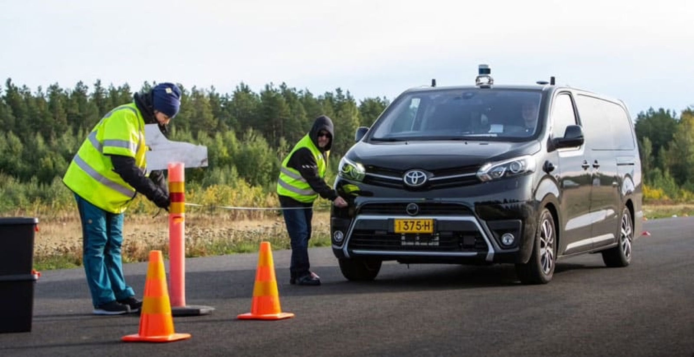

System Test Lead — building V&V from the ground up
Testing framework, team, and programs built from scratch

Photo: Sensible 4
Took overall responsibility for Sensible 4’s system testing: built the V&V strategy, test cases, and issue tracking (Jira + Practitest) from scratch, and led a team of 5 test engineers. Across the programs under this role, testing covered 10+ vehicles in total. Ran or was a key contributor to several open-road validation programs — in Espoo, third-party safety testing with VTT at Nummela ahead of the Norway pilots, Arctic winter testing in Muonio, and the EU Horizon 2020 SHOW programme in Tampere — plus confidential programs for a Tier 1 supplier and an OEM in Germany.